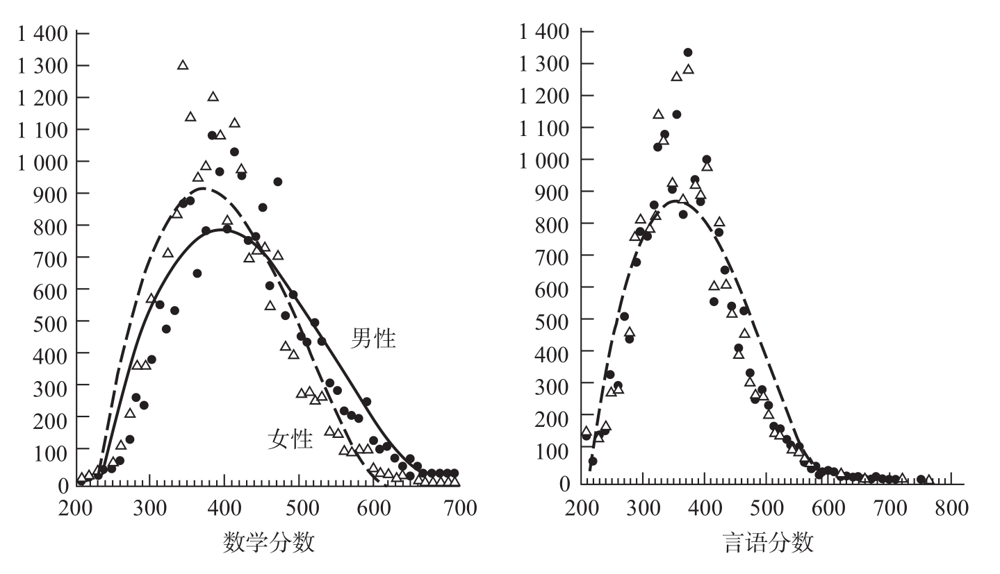

人们在寻找数学才能的遗传基础时，通常会采用一种方法，即检验兄弟姐妹，尤其是同卵双生子在数学成绩上的相关性。同卵双生子拥有相同的基因型，经常在数学上表现出相似的水平。异卵双生子仅共享一半的基因，在数学成绩上存在较大的差异，有时一个数学很好，而另一个则水平一般。通过比较多对同卵双生子和异卵双生子，就可以测量出“遗传力”。根据20世纪60年代史蒂文·范登伯格（Steven Vandenberg）进行的研究，遗传对数学的影响占到50%，表明约一半的数学成绩差异由个体间的遗传差异造成20。
然而，这个解释仍然存在很大争议。事实上，双生子研究方法受到了许多细节因素的影响。例如，研究表明，与异卵双生子相比，同卵双生子往往因在相同的教室，由相同的教师授课而得到完全相同的教育21。他们具有相似天赋的原因，可能是他们受到相同的教育而非他们拥有相同的基因。另一个潜在的影响是，在母亲的子宫内，将近70%的同卵双生子共用一个胎盘或同一套胚胎膜。显然，这种情况不会发生在异卵双生子中，因为他们来自独立的卵子。子宫环境中类似的生化成分使同卵双生子的大脑发育规律相同。即使数学才能的遗传性得到证明，双生子研究方法也无法明确这一研究过程究竟涉及了哪些基因。研究中涉及的基因很可能与数学不是直接相关的。举一个极端的例子，假设一个基因会影响身材，如果它的携带者经常打篮球而忽视数学教育，那这个基因可能对数学能力有负面的影响！
在探索数学才能的生物基础的过程中，另一个模糊但有趣的线索是对比男女之间的差异。高水平的数学几乎是仅属于男性的领域。在史蒂文·史密斯（Steven Smith）有关杰出心算者的书中，他描述了41个计算奇才，其中仅有3位是女性。在美国，卡米拉·本博（Camilla Benbow）和她的同事为12岁的青少年编制了一个测验——数学学习态度测验（SAT-M）22。平均分数在500点左右。500点以上的男女生比例是2：1；600点以上，男女生比例达到4：1；700点以上，男女生比例为13：1（见图6-4）。随着学习数学的学生聪明程度逐渐增加，男性的比例大大增加。这种男性在数学方面的优势，在所有国家都存在，从中国到比利时。男性在数学上具有优势是一个世界性的现象。

卡米拉·本博的取样来自有才能的七年级学生。标准能力测试结果显示男性在数学上有稳定的微弱优势。而在言语分数上男性和女性的分布几乎完全相同。
图6-4 针对青少年的数学学习态度测验
资料来源：重印自Benbow, 1988，版权所有©1988 by Cambridge University Press，得到出版商的授权。
但是，这一现象对于总人群的重要性是有限的，只有数学精英几乎全是由男性组成的。在整个人群中，男性在数学方面的优势较弱。在心理测验中，对性别影响的测量是通过统计每种性别中分数的离散程度来区分出男女的平均值差异。在青少年时期，这个值通常不超过一半，即男性和女性的分数在很大程度上是重叠的：1/3的男性分数低于女性的平均分数，或者，相反的，1/3的女性分数高于男性的平均分数。男性的优势也会因测验的内容不同有所变化。在解决数学问题方面，男性明显领先，但在心算方面，女性以微弱的优势领先。最后，男性和女性的差异出现在幼儿园开始时，在此之前没有检测到男性在数学方面有任何系统性的优势。尤其是在婴儿早期，男性的数学能力并不优于女性。
尽管有这些优势，男性在高水平数学上的霸权仍然产生了重要的问题。在我们的教育系统中，数学在几个关键阶段起到了过滤器的作用，每个阶段男孩都比女孩更容易通过。最终，我们社会中的女性很少有机会获得数学、物理或工程方面的顶级培训。社会学家、生物学家和政治家都想知道，教育资源的分配是否公平地反映了每种性别的天赋，或者是否仅仅为了保持男性统治的社会中对男性的偏向。
毫无疑问，心理学和社会学的许多因素使得女性在数学方面处于不利的境地。调查显示，平均来看，女性比男性在数学课程中表现出更多的焦虑；她们对自己的能力不自信；她们认为数学是一种典型的男性活动，而且很少会在她们的职业生涯中用得到。另外，她们的父母，尤其是父亲，也会有同样的看法。显然，这些刻板印象逐渐形成了一种自我实现的预言。许多年轻的女性缺乏对数学的热情，她们坚信自己不会在这个领域有所建树，这使她们忽视数学课程，也因此导致她们在数学方面较低的能力水平。
类似的刻板印象导致了社会阶层中数学成就的差异。我坚信，对数学的社会偏见很大程度上影响了男性和女性、穷人和富人在数学分数上的差异，通过在政策和社会中改变人们对数学的态度可以弥补这一差异。例如，在中国，较优秀的女性青少年获得的数学分数不仅超过了美国女性青少年，而且还超过了美国男性青少年。这就证明，性别差异造成的影响小于教育策略的影响。一项对多种文献的元分析表明，美国男性和女性在数学分数上的平均差异在30年间减少了一半，这种进步伴随着同时期女性地位的提升。
那么，生物性别差异在其他的差距中还发挥着作用吗？尽管在神经生物学或遗传学上还没有发现有关男性数学优势的决定因素，但越来越多的线索促使人们开始怀疑，生物变量确实会影响数学才能，虽然这种影响是细微的。有人选择了一组有数学天赋的儿童，结果发现男孩和女孩的比例是13:1。与那组未被选中的儿童相比，这些有天赋的儿童有2倍的可能患过敏症，4倍的可能是近视，以及2倍的可能是左利手。这些潜在数学家，其中50%以上都是左利手或双利手，或者他们自己是右利手，但兄弟姐妹是左利手。最后，他们中60%是长子。显然，把学者的原型想象成一个左利手、多病，并且戴着眼镜的独生子也并非完全没有根据！
我们可以通过引入一个态度因素来消除近视和数学天才之间的联系，也许近视的儿童更愿意钻研数学是因为他们在棒球方面表现很差。对于出生顺序也有类似的解释，也许长子所接受的教育存在一种微妙的差别，这种教育以某种方式鼓励了数学思维。对于过敏和利手则不容易找出这种“温和的”解释。此外，有一些极端但是确凿的个案，其中数学能力明显受到与性别相关的神经异常的影响。例如，“智障学者”中的大多数计算天才都患有孤独症，这种神经系统性疾病在男孩中的发病率是女孩的4倍。的确，孤独症与X染色体的变异是相关的，如脆性X综合征（fragile X syndrome）。相反，特纳氏综合征（Turner’s syndrome）是一种只影响女性的遗传疾病，与X染色体的缺失相关。事实上，除了某些身体的畸形，患特纳氏综合征的女性在数学和空间心理表征方面也会表现出严重的特定认知障碍，尽管她们的智商可能处于正常水平23。一部分原因是卵巢萎缩引起性激素分泌异常。实际上，早期激素治疗能够改善她们在数学和空间方面的认知表现。
我们依然没有为性别、X染色体、激素、利手、过敏、出生顺序和数学之间的这些神秘联系找到一个令人满意的解释。今天我们所能做的，就是把可能性最大的因果链以一种创作印象派画作的方式描述出来，一些科学家称之为“原来如此的故事”（just so stories）。神经心理学家诺曼·格施温德（Norman Geschwind）和他的同事认为24，妊娠期间睾酮水平升高，可能会同时影响免疫系统和大脑半球的分化。睾酮可能会导致大脑左半球发育变缓。由此推测，左利手出现的可能性会因此而增加，同时，依靠大脑右半球加工的空间心理表征的操作能力也会提高。这种精细的空间感会反过来使操纵数学概念变得更容易。因为睾酮是雄性激素，这种假定的级联效应（Cascade of effect）(20)对男性的影响可能会比对女性的更大。同时，不难理解它可能由X染色体的部分基因控制，这就解释了数学和空间倾向的遗传性。
围绕这个至今令人迷惑不解的现象有众多线索，其中有这样一条：雄性激素可以直接影响发育中的大脑的组织结构。在发育过程中，性激素处于异常水平的被试出现了空间和数学加工过程的改变，处在月经周期不同阶段的女性同样出现了这种改变；在老鼠中，接受激素治疗的雌性的空间能力超过了未接受治疗的雌性，并赶上了未接受治疗的雄性；在第一次怀孕期间，子宫中性激素的浓度较高（记住，大多数的数学天才都是长子）。在这种激素变化的影响下，男性大脑的组织形式可能略微不同于女性的。神经回路可能以一种目前为止仍然未知的方式发生了微妙的改变，这可以解释为什么男性在抽象数学空间中具有略微敏捷的能动性。
鉴于目前的知识水平，要超越理论的模糊性，找到一个对数学天赋的简单、确定性解释是不可能的，但如果期待基因与天才之间有直接联系那就太天真了。它们之间的距离如此之大，只有多种扭曲的因果链才可以填补其间的空隙。天才的出现是多种因素的影响相融合的结果，包括遗传、激素、家族因素以及教育。生物学因素和环境作用相互交织在一个牢不可破的因果链之中，通过生物学预测天才，或者让两个诺贝尔奖获得者结合而生出一个小爱因斯坦都是不可能的。